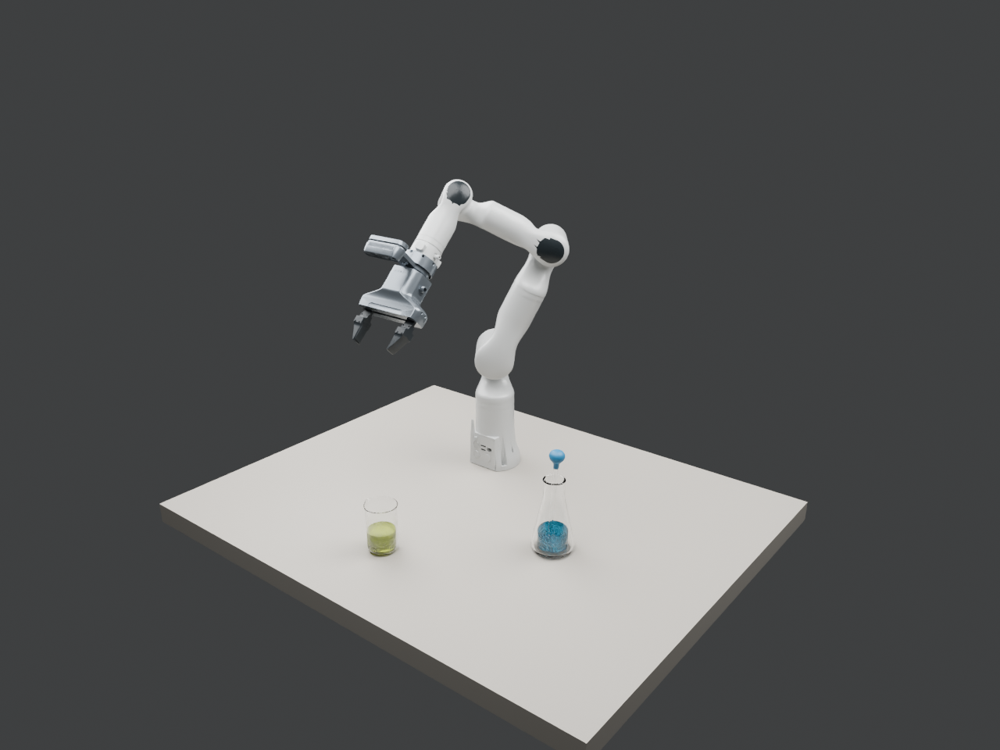
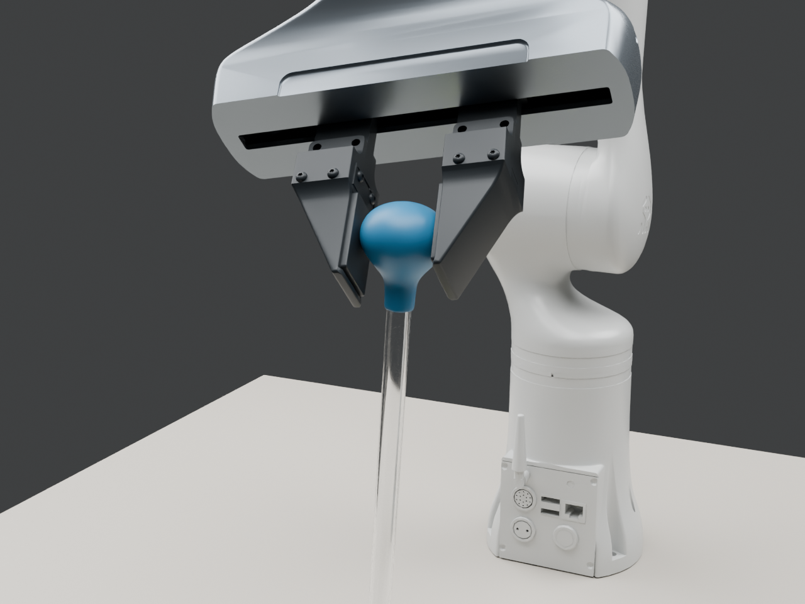
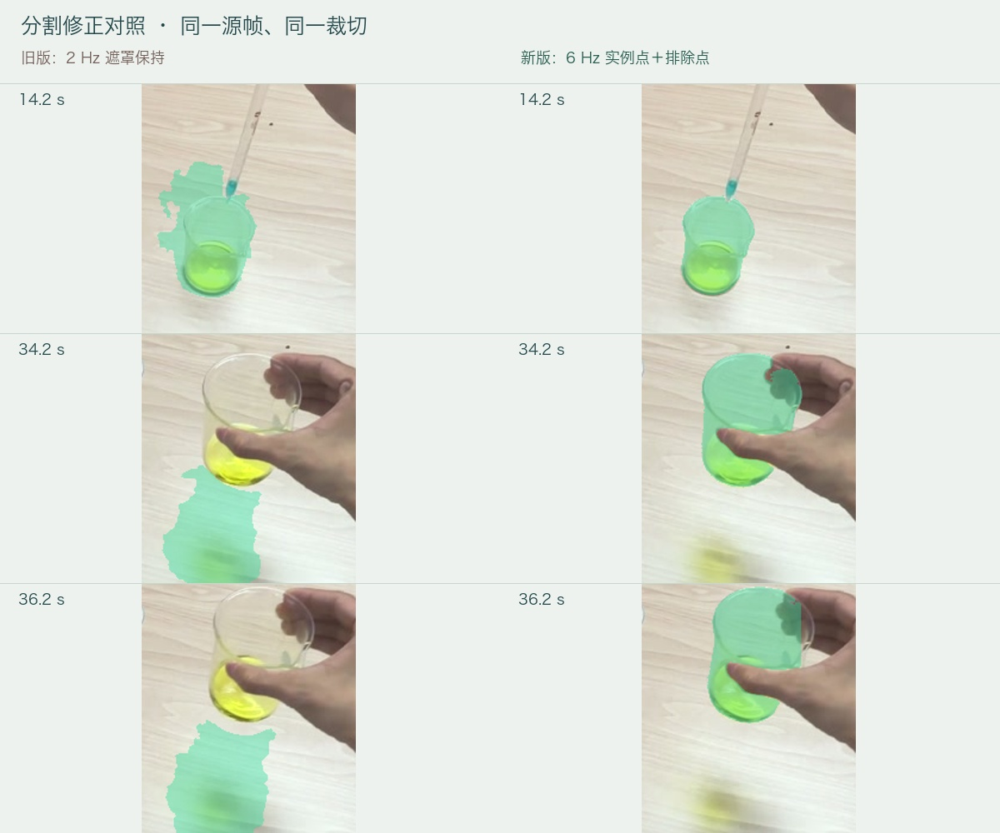
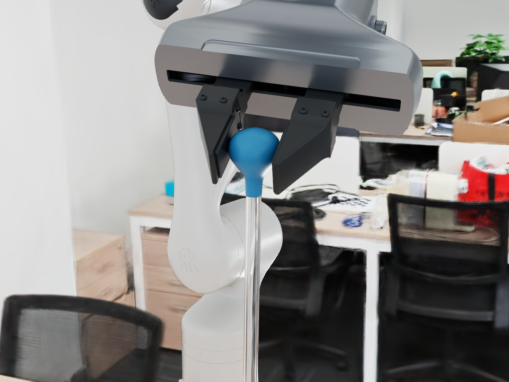
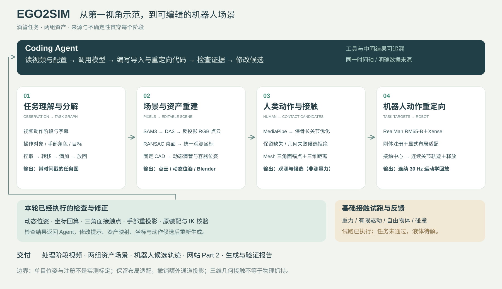

EGO2SIM / CONFIGURATION REVIEW / 2026-10-23Ego2Sim 转换 · 生成与验证报告
以冻结 construction、逐部件 OBJ 与材料绑定为准。这里只核对和重建配置，没有运行物理求解。

冻结初始关节姿态和两组器皿布局。此图使用额外的装配检查视角；灰色背景为展示辅助。
修正版 Xense 夹爪近景，使用原滴管任务的跟随近景相机规则；姿态来自新视频的运动学候选，不代表接触验证通过。从 IMG_6100 到可编辑场景
| 阶段 | 实际处理 | 边界 |
|---|
| 任务理解 | 43.8867 秒视频，按观察标注 7 个阶段与目标器皿。 | 滴加意图可见；吸液量、力与完成条件未实测。 |
| 分割与深度 | SAM3 在 263 个样本上执行实例框、正负点与人体文字分割（6 Hz）；DA3 Small 仍为 88 个样本、2 Hz 相对深度。 | 透明玻璃边界有误差；深度不是标定尺度。 |
| 去手背景 | 逐帧人体遮罩＋排除移动资产的多帧背景＋静态锥形瓶参考；遮挡杯体用斜线标记，残留背景区域补全。 | 保留接缝与补全不确定性；不是隐藏背景真值。 |
| 人类动作 | MediaPipe 263 样本中 233 有检测，30 缺失保留；手形与语义接触候选。 | 三维根部按任务坐标估计；没有测量接触力。 |
| 机器人重定向 | 原滴管配置＋源时间相对目标＋CAD 高度先验＋有界 IK。 | 源动作、位置和时序是演示候选，不是完整物理求解。 |
处理视频的 30 fps 由 6 Hz 样本保持显示；新版分割为 6 Hz，深度仍为 2 Hz。没有将重复显示帧当成新的推理或仿真状态。
分割精修 · V2
旧版仅在 88 帧推理并保持遮罩；新版为全部 263 个 6 Hz 样本独立推理，使用实例框和正负提示点。重新定位黄绿液体，修复拿杯时跟到桌面反光的问题；滴管与瓶身分开，人体前景优先。播放仍为 30 fps 保持帧。

下载整段分割对照 · 局部检查记录
抽查 12 个分割画面，并检查最小遮罩面积对应的遮挡帧。34.17 s 和 36.17 s 的两处人工圈定桌面反光区域，旧版误标像素分别为 1,886 和 1,991，新版均为 0。此结果只代表这两处局部区域，不是全数据集准确率或人工真值 IoU。四类可见遮罩无重叠；透明边缘与遮挡仍有估计误差。
去手视图保留当前可见物体，利用其他源帧补充背景和静态锥形瓶；被手遮住的杯体以斜线提示未知，不补造隐藏液体和玻璃。背景配准仍有接缝、阴影和视差，不是标定后的三维重建真值。本轮仅更新感知展示，机器人候选与原液体配色保持原版本，未新增物理求解。
核对结果
| 项 | 确认的来源与修正 |
|---|
| 机械臂 | RealMan RM65-B。底层 URDF 与旧候选相同；改正的是装配导入、逐面材料、初始姿态和展示方式。 |
| 末端 | 原 Xense 外壳、左右夹指、转接板、安装板和 D435i 腕部外壳。保留原局部坐标，不重居中或缩放。 |
| 两组器皿 | 烧杯 mix；锥形瓶 flask＋可动 dropper＋两侧蓝色胶头。其余任务器皿均排除。 |
| 液体配色 | 沿用上一版：烧杯黄绿色、锥形瓶蓝青色。保留原液体材质参数；液量未测量，当前仅表现外观。 |
| 尺寸 | 滴管任务配置：烧杯高 90 mm、直径约 60 mm；锥形瓶高 140 mm；玻璃管 160 mm、胶头高 35 mm。上传 CAD 的 100 / 160 / 250 mm 另一套尺寸保留为备选，不混入当前场景。 |
| 相机 | D435i 名义内参 640×480，fx＝fy＝462.1386899 px；固定相机与物理腕相机按冻结安装变换。原展示近景、虚拟腕相机单独命名，不冒充传感器画面。 |
| 初态 | 按冻结关节和安装链复算，部件位置最大差 1.11e-16 m（数值精度内）。 |
原滴管任务参考

2026-10-22 原任务已渲染画面，仅作为外观与装配参考；不是 IMG_6100 的新转换结果，也没有重启该任务。来源
IRMV_R2S2R_DIZHOU/work/chemistry_movie_hq_20261010/inputs02
construction SHA-256：792af5dc96cc7e156e1941ffc78161b479fb23952e4ba4d6e1e559e36f348245
37 个来源文件已复制并记录哈希；20 个保留部件逐一检查 OBJ 导入位置。Blender 与原 Caustica 光照、背景不同，不声称像素相同。
下载配置修正记录新视频候选的验证范围
263 个源时间采样，固定机器人关节位置限制内生成。最大 TCP 位置残差 2.143 mm，最大关节速度 4.054 rad/s；速度限制尚未验证。几何接触、碰撞、胶头变形、液体与任务成功未求解。人手采用 MediaPipe 估计，没有 Xsens 实测动捕。
每个阶段一个独立 Demo
五段展示均可单独播放、下载。场景总览中的资产转台为循环检查视角；其余视频处理视图与源时间采样对齐。反馈视频是生成记录的动画回顾，不是实时求解过程。
01 · 任务理解与分解
43.83 s · 1280×720 · 下载视频
02 · 场景与资产重建
43.83 s · 1280×720 · 下载视频
03 · 人类动作与接触
43.83 s · 1280×480 · 下载视频
04 · 机器人动作重定向
43.83 s · 1280×960 · 下载视频
05 · 验证与反馈闭环
43.83 s · 1280×720 · 下载视频
架构与参考

任务字幕的展示形式参考 NVIDIA Flora 的带时间戳动作说明；本轮未调用 Flora 模型。网站交互按 TEZOI 原有视觉体系集成。
本轮交付边界
完成视频理解、实际分割与相对深度推理、去手处理、冻结 CAD 导入、手形估计和机器人运动学候选。三维手部根坐标由任务坐标先验放置，机器人对象运动依阶段映射；均不是标定后的三维动作真值。接触标签是候选，不是触觉测量。相机继承原滴管名义配置，灰色展示背景未重建成原办公室。
液体沿用之前的黄绿／蓝青外观，固定展示体积随器皿移动；不包含液面动力学、转移质量、胶头形变与物理成功结论。完整验证与优化反馈接口保留为后续求解工作。
返回 Ego2Sim Part 2